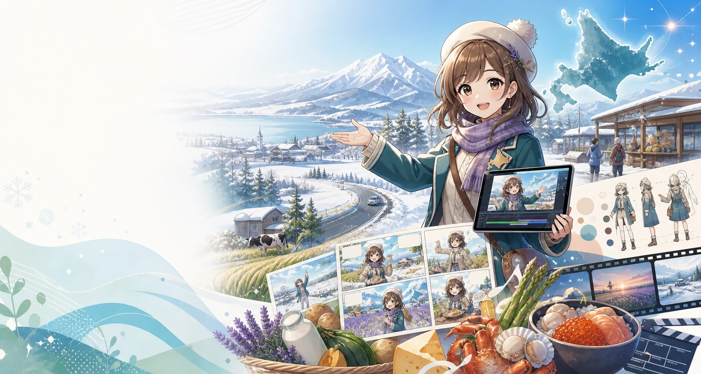
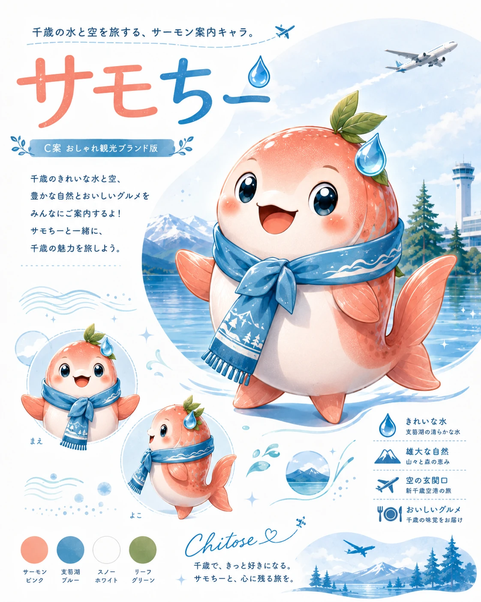
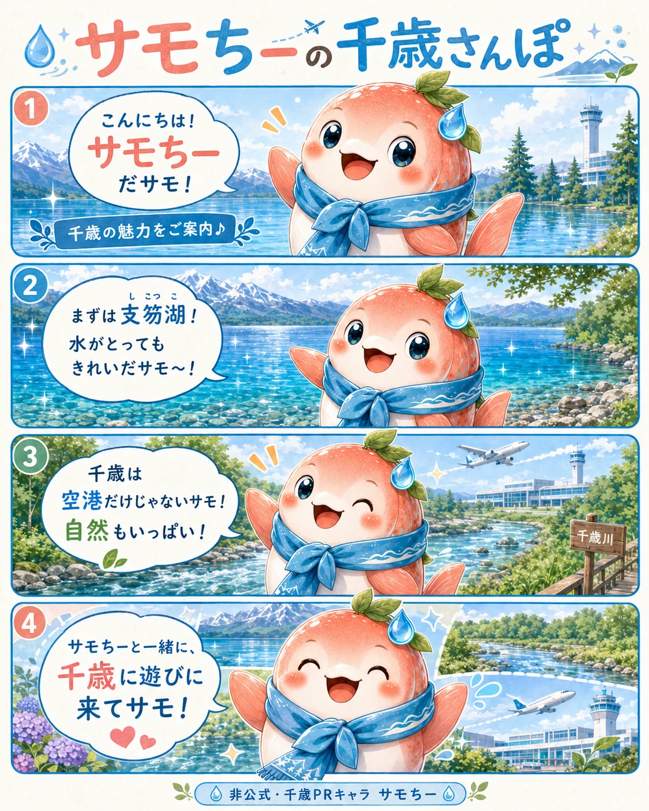

代表作品 / 地域PR
ニセコカントリー
ファーム PR動画
地域の事業と空気感を、短尺で伝わる映像へ。SNSで見てもらいやすいテンポと、場所の印象が残る世界観を組み立てたPR制作実績です。
地域や商品のPRも、企画から相談できます。
このようなPR動画について相談するAI PR動画 / 企画から相談
北海道を拠点に、地域・観光・飲食・宿泊・商品の魅力を、SNSやWebで伝わる短尺AI PR動画として組み立てます。企画から構成、制作まで一緒に進めます。
相談対象 地域・観光・飲食・宿泊・商品・企業・イベント
PR・コンセプト作品
地域・店舗・商品の魅力を、用途に合わせて組み立てた作品です。
代表作品 / 地域PR
地域の事業と空気感を、短尺で伝わる映像へ。SNSで見てもらいやすいテンポと、場所の印象が残る世界観を組み立てたPR制作実績です。
地域や商品のPRも、企画から相談できます。
このようなPR動画について相談する
コンセプト作品 / 飲食店PR
炎、湯気、焼き上がる北海道食材の質感を近距離で見せ、店の世界観と食欲を伝える縦型ショートの飲食店PRコンセプトです。

コンセプト作品 / 宿泊施設PR
ニセコの雪山と滞在時間をつなぎ、「雪まで日常になる」という体験価値を伝える縦型ショートの宿泊施設PRコンセプトです。

コンセプト作品 / ファッションPR
「KAWAII IS POWER」の世界観を、色彩とスタイリングで見せる縦型ファッションCMのコンセプトです。
コンテスト・受賞作品
審査で評価された作品を、受賞内容とともにご覧いただけます。

2025.11 / グランプリ
短尺でも世界観と物語が伝わる、AI映像表現のグランプリ作品です。

2026.06 / 優秀賞
実務を想定した構成と、情報を見せるデザイン提案が評価された優秀賞作品です。

2026.08 / 入賞
RenoiseのSeedance 2.5 One Shot Challengeに入賞した、架空のヘッドホンPR広告です。

2026.08 / 優秀賞
DomoAI夏のクリエイティブチャレンジの優秀賞作品、架空の夏ファッションCM「SUMMER MODE」です。
できること
PR動画を中心に、案内役キャラクターやSNS投稿へ、同じ世界観を展開します。

主なサービス
店舗、商品、道の駅、観光施設、イベントを、15秒・30秒・60秒の短尺動画に。SNSやWebで使いやすい形に整えます。

キャラクター
地域・店舗・商品の案内役を設計し、動画、SNS、チラシ、Webへ展開します。

SNSコンテンツ
地域の魅力や商品情報を、継続投稿しやすいストーリーと画像コンテンツにします。
対応ジャンル地域・観光／商品・農産物／飲食・宿泊／企業・イベント
プロフィール / 北海道を拠点に
道外へ見せたい魅力と、地元の人が大切にしている空気感。その両方を意識しながら、地域や商品の物語を映像へ落とし込みます。
ただ目立つだけではなく、「行ってみたい」「買ってみたい」「応援したい」と思ってもらえる地域PRを目指しています。
すーさんの出発点は北海道です。土地の空気、季節の変化、食や人の温度を知っているからこそ、地域の魅力を初めて見る方にも届く順番へ整えられます。北海道の地域・観光・飲食・宿泊作品を、全国の店舗や商品のPRへ展開できる形で積み重ねています。
2026北海道観光動画チャレンジ 特別協力・審査員の公式掲載を見るプロフィールの背景
北海道でカイロプラクターとして人と向き合う仕事を続けながら、AIアニメーション、キャラクター、SNS向けコンテンツの制作に取り組んでいます。
制作で大切にしているのは、見た目の派手さだけで終わらせないことです。まず話を聞き、その地域や商品らしさを整理し、初めて見る方にも伝わる順番と世界観を組み立てます。
完成した動画を一本だけで終わらせず、キャラクター、投稿画像、4コマ、Webなどへ展開しやすい形にすることも意識しています。
受賞・入賞
AI動画・実務デザインのコンテストで、これまでに14件の受賞・入賞実績があります。
進め方
まだ企画が固まっていない段階から、伝える内容と使い方を一緒に組み立てます。
目的、届けたい相手、地域や商品の魅力を一緒に整理します。
構成と世界観を固め、AI映像やキャラクターを制作。完成前に内容をご確認いただきます。
SNSやWebで使いやすい形式に整え、継続的な発信へつなげます。
相談の前に
企画が固まっていなくても大丈夫です。フォームでは、相談したい内容とPRしたいものを選び、分かる範囲で状況をお知らせください。
料金と制作条件
料金15秒 3万円〜（税込）30秒・60秒は、内容・構成に応じて個別にお見積もりします。
納期素材・構成確定後、納品まで約2週間
修正修正2回まで
権利納品物の利用範囲・著作権の扱い・実績掲載の可否は、案件ごとに事前確認します。
フォームは、分かる範囲で大丈夫です
お名前・メールアドレス・業種・活動内容、相談したい内容やPRしたいものをお聞きします。内容や予算が未定でも大丈夫です。詳細欄は任意です。
例：「SNSで紹介したい」でも大丈夫です。
相談フォームへ進む XのDMで相談する 相談の流れを見るよくある質問
「商品をSNSで広げたい」「地域の魅力を動画にしたい」といった段階からご相談いただけます。
15秒・30秒・60秒の短尺PR動画に対応しています。用途に合わせて構成をご提案します。
Webサイト、チラシ、イベント告知など、地域や店舗の発信に合わせて展開できます。
お名前、メールアドレス、業種・活動内容、相談したい内容、PRしたいもの、ご予算感をご入力ください。
詳細欄は任意です。相談内容は「まだ決まっていない」、予算は「未定」を選べます。
相談の入口
企画が固まっていなくても大丈夫です。地域、店舗、商品の魅力を整理するところからご相談いただけます。海外向け発信は、必要な言語・権利・用途を確認のうえご案内します。
フォームは分かる範囲でご記入ください。内容や予算が未定でもご相談いただけます。
フォームが手間な方は、XのDM（@su_nagomi）でも気軽にご相談いただけます。